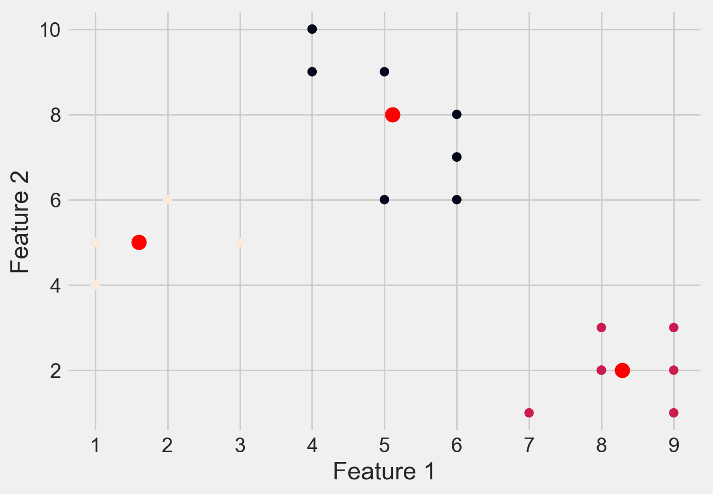

import numpy as np
import pandas as pd
import matplotlib.pyplot as plt
import seaborn as sns
from sklearn.cluster import KMeans
from scipy.spatial.distance import cdist
from sklearn import metrics
import warnings
warnings.filterwarnings('ignore')
Chapter # 10
K-means Clustering
Chapter # 10
K-means Clustering
Introduction
Clustering is the task of dividing the population or data points into a number of groups such that data points in the same groups are more similar to other data points in the same group than those in other groups. In simple words, the aim is to segregate groups with similar traits and assign them into clusters.
Application of Clustering in Real World
Clustering is a widely used technique in the industry. It is being used in almost every domain, from banking and recommendation engines to document clustering and image segmentation.
- Customer Segmentation -
One of the most common applications of clustering is customer segmentation. And it isn’t just limited to banking. This strategy is across functions, including telecom, e-commerce, sports, advertising, sales, etc.
- Document Clustering -
Another common application of clustering. Let’s say you have multiple documents and you need to cluster similar documents together. Clustering helps us group these documents such that similar documents are in the same clusters.
- Image Segmentation -
We can also use clustering to perform image segmentation. In image segmentation, we try to club similar pixels in the image together. We can apply clustering to create clusters having similar pixels in the same group.
- Recommendation Engines -
Clustering can also be used in recommendation engines. Let’s say you want to recommend songs to your friends. You can look at the songs liked by that person and then use clustering to find similar songs and finally recommend the most similar songs.
K-means Clustering
K-means clustering is one of the simplest and popular unsupervised machine learning algorithms. You’ll define a target number k, which refers to the number of centroids you need in the dataset. A centroid is the imaginary or real location representing the center of the cluster. Every data point is allocated to each of the clusters through reducing the in-cluster sum of squares. In other words, the K-means algorithm identifies k number of centroids, and then allocates every data point to the nearest cluster, while keeping the centroids as small as possible. The ‘means’ in the K-means refers to averaging of the data; that is, finding the centroid. Please see Figure 1 to get an idea about K-means clustering.

Steps in K-Means Algorithm
- Choose the number of clusters K.
- Select at random K points, the centroids(not necessarily from your dataset).
- Assign each data point to the closest centroid → that forms K clusters.
- Compute the mean of data points within a cluster and place the new centroid of each cluster.
- Reassign each data point to the new closest centroid. If any reassignment took place, go to step 4, otherwise, the model is ready.
How to Choose the Value of K?
There are different techniques available to find the optimal value of K. The most common technique is the elbow method.
Elbow Method
The elbow method is used to determine the optimal number of clusters in K-means clustering. The elbow method plots the value of the Within cluster sum of square of the data points(WCSS) produced by different values of K. Figure 2 shows how the elbow method works.
Distortion: It is calculated as the average of the squared distances from the cluster centers of the respective clusters to each data point. Typically, the Euclidean distance metric is used.
\[ Distortion = 1/n * \sum(distance(point, centroid)^2) \]
Inertia: It is the sum of the squared distances of samples to their closest cluster center.
\[ Inertia = \sum(distance(point, centroid)^2) \]

We can see that if K increases, average distortion will decrease. We should choose that k where the distortion decline drastically. From the above diagram the best value of k will be 3.
Silhouette Score
Another method to find the optimal value of K is silhouette score. The silhouette score and plot are used to evaluate the quality of a clustering solution produced by the k-means algorithm. The silhouette score measures -
How close the data point is to other points in the cluster
How far away the data point is from points in other clusters
Silhouette coefficient values range between -1 and 1. Larger numbers indicate that samples are closer to their clusters than they are to other clusters. A silhouette score close to 0 suggests overlapping clusters, and a negative score suggests poor clustering solutions.
When will K-means Clustering Fail?
K-means clustering performs best on data that are spherical. Spherical data are data that group in space in close proximity to each other either. This can be visualized in 2 or 3 dimensional space more easily. Data that aren’t spherical or should not be spherical do not work well with k-means clustering. For example, k-means clustering would not do well on the below data (Figure 3) as we would not be able to find distinct centroids to cluster the two circles or arcs differently, despite them clearly visually being two distinct circles and arcs that should be labeled as such.

Importing Python Libraries
An Example of Clustering Using a Simulated Dataset
# Creating the data
x1 = np.array([3, 1, 1, 2, 1, 6, 6, 6, 5, 6,\
7, 8, 9, 8, 9, 9, 8, 4, 4, 5, 4])
x2 = np.array([5, 4, 5, 6, 5, 8, 6, 7, 6, 7, \
1, 2, 1, 2, 3, 2, 3, 9, 10, 9, 10])
X = np.array(list(zip(x1, x2))).reshape(len(x1), 2)
# Visualizing the data
sns.set_style('whitegrid')
plt.plot()
plt.xlim([0, 12])
plt.ylim([0, 12])
#plt.title('Dataset')
plt.scatter(x1, x2)
plt.show()distortions = []
inertias = []
mapping1 = {}
mapping2 = {}
K = range(1, 10)
for k in K:
# Building and fitting the model
kmeanModel = KMeans(n_clusters=k).fit(X)
kmeanModel.fit(X)
distortions.append(sum(np.min(cdist(X, kmeanModel.cluster_centers_,
'euclidean'), axis=1)) / X.shape[0])
inertias.append(kmeanModel.inertia_)
mapping1[k] = sum(np.min(cdist(X, kmeanModel.cluster_centers_,
'euclidean'), axis=1)) / X.shape[0]
mapping2[k] = kmeanModel.inertia_Please see Figure 4 to see elbow method using distortion
sns.set_style('whitegrid')
plt.plot(K, distortions, 'bx-')
plt.xlabel('Values of K')
plt.ylabel('Distortion')
#plt.title('The Elbow Method using Distortion')
plt.show()Please see Figure 5 to see elbow method using inertia
sns.set_style('whitegrid')
plt.plot(K, inertias, 'bx-')
plt.xlabel('Values of K')
plt.ylabel('Inertia')
#plt.title('The Elbow Method using Inertia')
plt.show()Please see Figure 6 for Silhouette Score.
# A list holds the silhouette coefficients for each k
kmeans_kwargs = {
"init": "random",
"n_init": 10,
"max_iter": 300,
"random_state": 42,
}
silhouette_coefficients = []
# Notice you start at 2 clusters for silhouette coefficient
from sklearn.metrics import silhouette_score
for k in range(2, 11):
kmeans = KMeans(n_clusters=k,**kmeans_kwargs)
kmeans.fit(X)
score = silhouette_score(X, kmeans.labels_)
silhouette_coefficients.append(score)plt.style.use("fivethirtyeight")
plt.plot(range(2, 11), silhouette_coefficients)
plt.xticks(range(2, 11))
plt.xlabel("Number of Clusters")
plt.ylabel("Silhouette Coefficient")
plt.show()Clustered Data Points For Different K Values
Please see Figure 7 for different clusters based on different values of K
# Create a range of values for k
k_range = range(1, 5)
# Initialize an empty list to
# store the inertia values for each k
inertia_values = []
# Fit and plot the data for each k value
for k in k_range:
kmeans = KMeans(n_clusters=k, \
init='k-means++', random_state=42)
y_kmeans = kmeans.fit_predict(X)
inertia_values.append(kmeans.inertia_)
plt.scatter(X[:, 0], X[:, 1], c=y_kmeans)
plt.scatter(kmeans.cluster_centers_[:, 0],\
kmeans.cluster_centers_[:, 1], \
s=100, c='red')
#plt.title('K-means clustering (k={})'.format(k))
plt.xlabel('Feature 1')
plt.ylabel('Feature 2')
plt.show()
# Plot the inertia values for each k
plt.plot(k_range, inertia_values, 'bo-')
#plt.title('Elbow Method')
plt.xlabel('Number of clusters (k)')
plt.ylabel('Inertia')
plt.show()


Loading Dataset
df = pd.read_csv('DATA/Mall_Customers.csv')Metadata of the Dataset
# first few rows
df.head()| CustomerID | Gender | Age | Annual Income (k$) | Spending Score (1-100) | |
|---|---|---|---|---|---|
| 0 | 1 | Male | 19 | 15 | 39 |
| 1 | 2 | Male | 21 | 15 | 81 |
| 2 | 3 | Female | 20 | 16 | 6 |
| 3 | 4 | Female | 23 | 16 | 77 |
| 4 | 5 | Female | 31 | 17 | 40 |
# size of datset
df.shape(200, 5)# summary about dataset
df.info()<class 'pandas.core.frame.DataFrame'>
RangeIndex: 200 entries, 0 to 199
Data columns (total 5 columns):
# Column Non-Null Count Dtype
--- ------ -------------- -----
0 CustomerID 200 non-null int64
1 Gender 200 non-null object
2 Age 200 non-null int64
3 Annual Income (k$) 200 non-null int64
4 Spending Score (1-100) 200 non-null int64
dtypes: int64(4), object(1)
memory usage: 7.9+ KBdf.isnull().sum()CustomerID 0
Gender 0
Age 0
Annual Income (k$) 0
Spending Score (1-100) 0
dtype: int64df.describe()| CustomerID | Age | Annual Income (k$) | Spending Score (1-100) | |
|---|---|---|---|---|
| count | 200.000000 | 200.000000 | 200.000000 | 200.000000 |
| mean | 100.500000 | 38.850000 | 60.560000 | 50.200000 |
| std | 57.879185 | 13.969007 | 26.264721 | 25.823522 |
| min | 1.000000 | 18.000000 | 15.000000 | 1.000000 |
| 25% | 50.750000 | 28.750000 | 41.500000 | 34.750000 |
| 50% | 100.500000 | 36.000000 | 61.500000 | 50.000000 |
| 75% | 150.250000 | 49.000000 | 78.000000 | 73.000000 |
| max | 200.000000 | 70.000000 | 137.000000 | 99.000000 |
df.describe().T| count | mean | std | min | 25% | 50% | 75% | max | |
|---|---|---|---|---|---|---|---|---|
| CustomerID | 200.0 | 100.50 | 57.879185 | 1.0 | 50.75 | 100.5 | 150.25 | 200.0 |
| Age | 200.0 | 38.85 | 13.969007 | 18.0 | 28.75 | 36.0 | 49.00 | 70.0 |
| Annual Income (k$) | 200.0 | 60.56 | 26.264721 | 15.0 | 41.50 | 61.5 | 78.00 | 137.0 |
| Spending Score (1-100) | 200.0 | 50.20 | 25.823522 | 1.0 | 34.75 | 50.0 | 73.00 | 99.0 |
Exploratory Analysis
plt.figure(1 , figsize = (15 , 6))
n = 0
for x in ['Age' , 'Annual Income (k$)' , 'Spending Score (1-100)']:
n += 1
plt.subplot(1 , 3 , n)
plt.subplots_adjust(hspace = 0.5 , wspace = 0.5)
sns.distplot(df[x] , bins = 15)
plt.title('Distplot of {}'.format(x))
plt.show()sns.pairplot(df, vars = ['Spending Score (1-100)', 'Annual Income (k$)', 'Age'], hue = "Gender")
plt.show()Clustering Based on Age and Spending Score
sns.set_style('whitegrid')
plt.figure(1 , figsize = (10 , 5))
plt.title('Scatter plot of Age v/s Spending Score', fontsize = 20)
plt.xlabel('Age')
plt.ylabel('Spending Score')
plt.scatter( x = 'Age', y = 'Spending Score (1-100)', data = df, s = 100)
plt.show()Deciding K Value
X1 = df[['Age' , 'Spending Score (1-100)']].iloc[: , :].values
inertia = []
for n in range(1 , 15):
algorithm = (KMeans(n_clusters = n ,init='k-means++', n_init = 10 ,max_iter=300,
tol=0.0001, random_state= 111 , algorithm='elkan') )
algorithm.fit(X1)
inertia.append(algorithm.inertia_)plt.figure(1 , figsize = (10,5))
plt.plot(np.arange(1 , 15) , inertia , 'o')
plt.plot(np.arange(1 , 15) , inertia , '-' , alpha = 0.5)
plt.xlabel('Number of Clusters') , plt.ylabel('Inertia')
plt.show()The KMeans algorithm clusters data by trying to separate samples in n groups of equal variances, minimizing a criterion known as
inertia, orwithin-cluster sum-of-squares Inertia, or thewithin-cluster sum of squares criterion, can be recognized as a measure of how internally coherent clusters are.The k-means algorithm divides a set of
Nsamples intoKdisjoint clustersC, each described by the meanjof the samples in the cluster. The means are commonly called the cluster centroids.The K-means algorithm aims to choose centroids that minimize the inertia, or within-cluster sum of squared criterion.
Applying KMeans for K = 4
algorithm = (KMeans(n_clusters = 4 ,init='k-means++', n_init = 10 ,max_iter=300,
tol=0.0001, random_state= 111 , algorithm='elkan') )
algorithm.fit(X1)
labels1 = algorithm.labels_
centroids1 = algorithm.cluster_centers_h = 0.02
x_min, x_max = X1[:, 0].min() - 1, X1[:, 0].max() + 1
y_min, y_max = X1[:, 1].min() - 1, X1[:, 1].max() + 1
xx, yy = np.meshgrid(np.arange(x_min, x_max, h), np.arange(y_min, y_max, h))
Z = algorithm.predict(np.c_[xx.ravel(), yy.ravel()]) plt.figure(1 , figsize = (15 , 7) )
plt.clf()
Z = Z.reshape(xx.shape)
plt.imshow(Z , interpolation='nearest',
extent=(xx.min(), xx.max(), yy.min(), yy.max()),
cmap = plt.cm.Pastel2, aspect = 'auto', origin='lower')
plt.scatter( x = 'Age', y = 'Spending Score (1-100)', data = df, c = labels1, s = 100)
plt.scatter(x = centroids1[: , 0] , y = centroids1[: , 1] , s = 300 , c = 'red' , alpha = 0.5)
plt.ylabel('Spending Score (1-100)') , plt.xlabel('Age')
plt.show()Applying KMeans for K = 5
algorithm = (KMeans(n_clusters = 5, init='k-means++', n_init = 10, max_iter=300,
tol=0.0001, random_state= 111 , algorithm='elkan'))
algorithm.fit(X1)
labels1 = algorithm.labels_
centroids1 = algorithm.cluster_centers_h = 0.02
x_min, x_max = X1[:, 0].min() - 1, X1[:, 0].max() + 1
y_min, y_max = X1[:, 1].min() - 1, X1[:, 1].max() + 1
xx, yy = np.meshgrid(np.arange(x_min, x_max, h), np.arange(y_min, y_max, h))
Z = algorithm.predict(np.c_[xx.ravel(), yy.ravel()]) plt.figure(1 , figsize = (15 , 7) )
plt.clf()
Z = Z.reshape(xx.shape)
plt.imshow(Z , interpolation='nearest',
extent=(xx.min(), xx.max(), yy.min(), yy.max()),
cmap = plt.cm.Pastel2, aspect = 'auto', origin='lower')
plt.scatter( x = 'Age', y = 'Spending Score (1-100)', data = df, c = labels1, s = 100)
plt.scatter(x = centroids1[: , 0] , y = centroids1[: , 1] , s = 300 , c = 'red' , alpha = 0.5)
plt.ylabel('Spending Score (1-100)') , plt.xlabel('Age')
plt.show()Clustering Based on Annual Income and Spending Score
X2 = df[['Annual Income (k$)' , 'Spending Score (1-100)']].iloc[: , :].values
inertia = []
for n in range(1 , 11):
algorithm = (KMeans(n_clusters = n ,init='k-means++', n_init = 10 ,max_iter=300,
tol=0.0001, random_state= 111 , algorithm='elkan') )
algorithm.fit(X2)
inertia.append(algorithm.inertia_)plt.figure(1 , figsize = (10,5))
plt.plot(np.arange(1 , 11) , inertia , 'o')
plt.plot(np.arange(1 , 11) , inertia , '-' , alpha = 0.5)
plt.xlabel('Number of Clusters') , plt.ylabel('Inertia')
plt.show()algorithm = (KMeans(n_clusters = 5 ,init='k-means++', n_init = 10 ,max_iter=300,
tol=0.0001, random_state= 111 , algorithm='elkan') )
algorithm.fit(X2)
labels2 = algorithm.labels_
centroids2 = algorithm.cluster_centers_h = 0.02
x_min, x_max = X2[:, 0].min() - 1, X2[:, 0].max() + 1
y_min, y_max = X2[:, 1].min() - 1, X2[:, 1].max() + 1
xx, yy = np.meshgrid(np.arange(x_min, x_max, h), np.arange(y_min, y_max, h))
Z2 = algorithm.predict(np.c_[xx.ravel(), yy.ravel()]) plt.figure(1 , figsize = (15 , 7) )
plt.clf()
Z2 = Z2.reshape(xx.shape)
plt.imshow(Z2 , interpolation='nearest',
extent=(xx.min(), xx.max(), yy.min(), yy.max()),
cmap = plt.cm.Pastel2, aspect = 'auto', origin='lower')
plt.scatter( x = 'Annual Income (k$)' ,y = 'Spending Score (1-100)' , data = df , c = labels2 ,
s = 100 )
plt.scatter(x = centroids2[: , 0] , y = centroids2[: , 1] , s = 300 , c = 'red' , alpha = 0.5)
plt.ylabel('Spending Score (1-100)') , plt.xlabel('Annual Income (k$)')
plt.show()Clustering Age, Annual Income, and Spending Score
X3 = df[['Age' , 'Annual Income (k$)' ,'Spending Score (1-100)']].iloc[: , :].values
inertia = []
for n in range(1 , 11):
algorithm = (KMeans(n_clusters = n, init='k-means++', n_init = 10, max_iter=300,
tol=0.0001, random_state= 111, algorithm='elkan'))
algorithm.fit(X3)
inertia.append(algorithm.inertia_)plt.figure(1 , figsize = (10,5))
plt.plot(np.arange(1 , 11) , inertia , 'o')
plt.plot(np.arange(1 , 11) , inertia , '-' , alpha = 0.5)
plt.xlabel('Number of Clusters') , plt.ylabel('Inertia')
plt.show()algorithm = (KMeans(n_clusters = 6 ,init='k-means++', n_init = 10 ,max_iter=300,
tol=0.0001, random_state= 111 , algorithm='elkan') )
algorithm.fit(X3)
labels3 = algorithm.labels_
centroids3 = algorithm.cluster_centers_
y_kmeans = algorithm.fit_predict(X3)
df['cluster'] = pd.DataFrame(y_kmeans)
df.head()| CustomerID | Gender | Age | Annual Income (k$) | Spending Score (1-100) | cluster | |
|---|---|---|---|---|---|---|
| 0 | 1 | Male | 19 | 15 | 39 | 4 |
| 1 | 2 | Male | 21 | 15 | 81 | 5 |
| 2 | 3 | Female | 20 | 16 | 6 | 4 |
| 3 | 4 | Female | 23 | 16 | 77 | 5 |
| 4 | 5 | Female | 31 | 17 | 40 | 4 |
import plotly as py
import plotly.graph_objs as go
trace1 = go.Scatter3d(
x= df['Age'],
y= df['Spending Score (1-100)'],
z= df['Annual Income (k$)'],
mode='markers',
marker=dict(
color = df['cluster'],
size= 10,
line=dict(
color= df['cluster'],
width= 12
),
opacity=0.8
)
)
data = [trace1]
layout = go.Layout(
title= 'Clusters wrt Age, Income and Spending Scores',
scene = dict(
xaxis = dict(title = 'Age'),
yaxis = dict(title = 'Spending Score'),
zaxis = dict(title = 'Annual Income')
)
)
fig = go.Figure(data=data, layout=layout)
py.offline.iplot(fig)